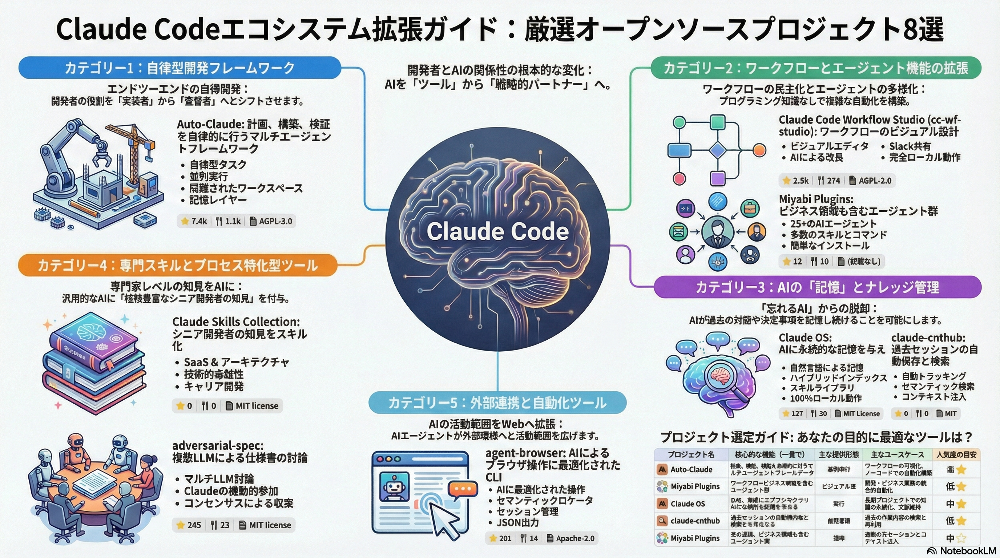

自律的AI開発パートナーの時代
Claude Codeを「ツール」から「戦略的パートナー」へ進化させる
Claude Code単体でも強力なAIコーディングアシスタントですが、オープンソースエコシステムと組み合わせることで、プロジェクトと共に成長し、文脈を記憶し、自律的にタスクを遂行する「戦略的パートナー」へと変貌します。「この関数を書いて」から「この機能の最適なアーキテクチャについて議論しよう」という次元への進化です。
8つの注目プロジェクト
🤖 Auto-Claude
エンドツーエンドの自律開発フレームワーク。Plan→Build→QA→Mergeの完全自動化。最大12ターミナルの並列実行、Git Worktreeによる隔離環境、自己検証QA機能を搭載。
🌐 Agent-Browser
Playwrightベースのブラウザ自動操作。Webスクレイピング、フォーム入力、E2Eテスト自動化など、実世界のWeb操作をAIが自律的に実行。
🛡️ Adversarial-Spec
仕様の曖昧性を自動検出するセキュリティ重視ツール。エッジケース生成、脆弱性シミュレーション、堅牢な仕様書作成を支援。
🧠 Claude Skills
再利用可能なスキルセットをClaude Codeに追加。コミュニティ製スキルのインポート/エクスポート、プロジェクト固有のワークフロー定義が可能。
📊 Workflow Studio
ビジュアルワークフロービルダー。複雑なタスクをノードベースで構築し、条件分岐、ループ、並列処理を視覚的に設計。
🎏 Miyabi
日本語開発環境に特化したClaude Code拡張。日本語コメント生成、JIS規格対応、日本企業の開発プロセスに最適化。
💻 Claude OS
OSレベルでのClaude Code統合。ファイルシステム、プロセス管理、ネットワーク操作をAIが直接制御可能に。
🔗 claude-cnthub
プロジェクト間でコンテキストを共有・管理。過去の会話履歴、決定事項、学習内容を永続化し、長期的な開発パートナーシップを実現。
パラダイムシフト：ツールから自律的パートナーへ
Auto-Claude：計画・実装・検証の完全自動化
目標を記述するだけで、計画立案から実装までをAIが完遂。最大12の並列ビルドに対応し、Git Worktreeを使用してメインブランチから隔離された安全な環境で実行。人間がレビューする前に、AIが自らバグを検出し修正するループ機能を搭載。GitHub/Linearと連携し既存ワークフローへ統合可能です。
導入アプローチと注意点
これらのプロジェクトは発展途上のものが多く、APIや依存関係が頻繁に変更される可能性があります。段階的な導入（まず1つのプロジェクトから始める）、サンドボックス環境でのテスト、コミュニティの活発度確認（GitHubスター数、最終コミット日）を推奨します。特にAuto-ClaudeやClaude OSなど強力な権限を持つツールは、セキュリティポリシーとの整合性確認が必須です。
未来の開発スタイル
この進化は、開発者とAIの力学における根本的な地殻変動の始まりです。単純な指示応答型のツールから、洗練された協力者への移行を意味します。「この機能の最適なアーキテクチャについて議論しよう」という次元の対話が可能になり、この最前線に立つことが未来の開発における競争優位性を確立する鍵となります。